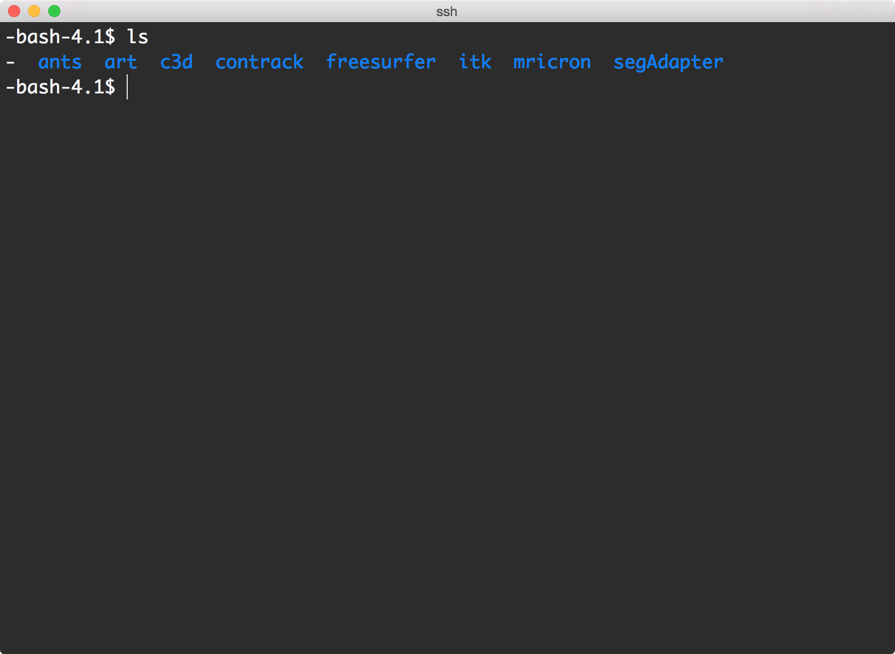

After you complete this section, you should be able to:
Note that everything in “{}” is to be replaced. For example, {fileName} –> iLovePeanuts.txt
Interaction with the supercomputer is typically performed with command line tools. The command line tools can be run via a command prompt, also known as a shell. SSH is used to establish a secure shell with the supercomputer. In general, users should log in via the hostname ssh.fsl.byu.edu.
ssh {username}@ssh.fsl.byu.eduwhere {username} is your NetID. Programs can be tested from the interactive nodes, but anything left running for more than an hour will be killed automatically.
First make sure you are apart of the fslg_byustudent group. You can check which groups you belong to by typing:
groupsCreate an apps directory in your home directory and go to that directory. First make sure you are in your home directory:
pwd
/fslhome/<username>/Next, make the new directory and go to that directory:
mkdir apps
cd appsThe apps can be found in the fslg_byustudent group:
rsync -rauv ~/fsl_groups/fslg_byustudent/apps/ ~/appsI always like to add the option --dry-run before submitting an rsync to make sure the files I want to copy are the ones being copied.
Check to make sure you have all the correct applications:

Every time a shell window opens, a process takes place to gather and compile information that needs to be available for all processes and child processes in that shell window. Many programs require certain environmental variables to be available in order to decipher the specifics of how to operate. In its simplest form, an environment variable is a variable with a name and a corresponding value. In most cases, it is simply the location of all the executable files for an application.
Since many of the programs in this class do not have the standard GUI (window) based application, if you want to “launch” the application you have to first set the environmental variable to tell the computer where the executable files for that application are located. Otherwise, when you run the program, you will get an error that the program does not exist.
Every time you open a shell window, if you have not permanently set the environmental variable, you will need to set it temporarily. The moment you close this window, the environmental variables are no longer set. If you run the program often, consider permanently setting the environment variable.
export ANTSPATH=/usr/local/antsbin/bin/
PATH=${ANTSPATH}:${PATH}Download an example bash_profile to use on the FSL supercomputer.
You can edit text files directly within the shell window.
vi ~/.bash_profileThis will launch a text editor. The UNIX vi has two modes of operation:
To begin insert mode to add text, press a and then type in the following information.
# ANTs Environmental Variables
export ANTSPATH=/usr/local/antsbin/bin/
PATH=${ANTSPATH}:${PATH}Once you’ve typed the code, press esc. Pressing the escape turns off insert mode and returns you to command mode. To save the file and exit out of vi text editor, type :wq<Return>. This command will quit vi, writing out modified file to file named in original invocation.
For more information on the basics of using vi go here:
http://www.cs.colostate.edu/helpdocs/vi.html
When writing bash commands, lines of code can get really, really long and sometimes leave you scrolling right and left for extended amounts of time. Although there are no hard and fast rules about formatting code, good coding practices involve more human-friendly methods of organization. Take the following one-line of code as an example:
N4BiasFieldCorrection -d 3 -i <inputImage>.nii.gz -o [<correctedImage>.nii.gz, <biasfield>.nii.gz] -s 4 -b [200] -c [50x50x50x50,0.000001]You are a lot more likely to make a mistake in your code (i.e., dropping a variable, making typos, etc.) when your code is all jumbled up like this. There’s a solution to make the code more human-readable, but does not change how the shell terminal reads the command. Remember that pressing <Return> in the shell terminal says, “run command”. How then do you take a long line of code and wrap it across multiple lines? Backslash!
The backslash, \, in the shell window is called an escape character. It preserves the literal value of the next character that follows. In the case of a newline, the backslash marks the continuation of a line when the line of code is longer than the width of the terminal; when the command is finally submitted, the backslash that precedes a newline character is removed from the input stream and effectively ignored. In other words, the one line of code wrapped across multiple lines is run as if it was a single line of code.
Test it out…
echo \
> "Knowledge is power."Now press the up arrow in your terminal. The previous command will appear and it should look something like this now.
echo "Knowledge is power."The terminal will remove the backslash and run the code as normal. Now what does the above code look like when it has been wrapped:
$ N4BiasFieldCorrection \
-d 3 \
-i <inputImage>.nii.gz \
-o [<correctedImage>.nii.gz,<biasfield>.nii.gz] \
-s 4 \
-b [200] \
-c [50x50x50x50,0.000001]For this class, I will try to make the code as human-readable as possible.